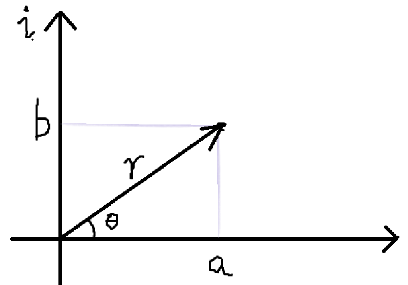

复数、复化解一阶常系数线性ODE、二阶常系数齐次线性ODE、二阶齐次线性ODE相关理论、二阶非齐次线性ODE相关理论
一. 复数和复指数
”数学就是一场符号的游戏，实际问题都是运用符号建的模。“
复数同理，虚部有什么实际含义吗？我想，目前暂且无需关心，当实际遇到需要建模的时候再谈。
那么，虚数就是\(i\)，且满足\(i^2 = 1\)。
所以复数可以这么表达：\(a + bi\)，其中\(a\)是实部，\(bi\)是虚部。这是复数的代数表达形式。
聪明的人类希望可视化复数，于是用复平面（其实就是坐标系）来描述复数：

当我们把复数放到复平面的时候，我们就可以用坐标来描述一个复数：（a,
b），虽然没有啥人这么描述就是了。
人们更喜欢用极坐标去描述，因为在复平面上，如果知道了\(\theta\)和\(r\)，那么相当于就知道了一个复数。
可以发现，对于复数\(a + bi\)，其模\(r = \sqrt{a^2 + b^2}\)，其辐角\(\theta = \arctan \frac{b}{a}\)
所以，假设我知道了一个复数的模和辐角，那么其可以表示为：\(r(\cos \theta + i\sin \theta)\)，这就是复数的极坐标表达形式。
Hummm，仍然不够简洁，right？
欧拉站出来了，给出了欧拉公式：\(\cos \theta + i\sin \theta = e^{i\theta}\)
我觉得欧拉公式不要从等价推导的角度去理解它，而是要从映射的角度去理解它。如果两个东西，不管外界对它们对什么样的刺激，它们产生的影响都是相同的，那从抽象的角度我们就可以认为这两个东西是等价的。上面那个公式说的就是这么个事情。
欧拉公式的右侧，也就是指数，我们很熟悉了right？其至少满足两个性质：
- \(e^x \cdot e^y = e^{x + y}\)
- \(\frac{dy}{dx} = ay, \quad y = e^{ax}\)
那么假设欧拉公式是正确的，去推一推指数的这两个性质，发现也是满足的，那么我们就有理由的认为，这两者在抽象层面上是“等价的”，即这个公式是正确的。 \[ \begin{align*} &~~~~(\cos \theta_1 + i\sin \theta_1)(\cos \theta_2 + i\sin \theta_2) \\ &=\cos \theta_1 \cos \theta_2 - \sin \theta_1 \sin \theta_2 + i(\sin \theta_1 \cos \theta_2 + \cos \theta_1 \sin \theta_2) \\ &=\cos(\theta_1 + \theta_2) + i\sin(\theta_1 + \theta_2) \\ &=e^{i(\theta_1 + \theta_2)} \\ \end{align*} \] 所以我们有理由说明，这个公式是正确的（严谨的证明这里没必要讨论）。
所以，有了欧拉公式的加持，我们可以将复数的极坐标形式改写，得到：\(re^{i\theta}\)，这就是复数的指数表达形式。
至此，对于一个复数，我们有了三种表达方式：
- \(a + bi\)
- \(r(\cos \theta + i \sin \theta), r = \sqrt{a^2 + b^2}, \theta = \arctan \frac{b}{a}\)
- \(re^{i\theta}, r = \sqrt{a^2 + b^2}, \theta = \arctan \frac{b}{a}\)
复数很有用，我们来看两个例子。
第一个是求解\(\int e^{-x}\cos x\mathrm{d}x\)
常规做法是两次分部积分法，但是可以将积分”复化“来做。
将\(\cos x\)看作是复数\(e^{i\theta}\)的实部，不妨记为\(Re(e^{ix})\)
复数如果乘一个实数，那么就是实部虚部分别乘这个实数，所以\(e^{-x}\cos x\)，其实就是\(e^{-x} \cdot e^{ix}\)这个复数的实部，即\(Re(e^{-x + ix})\)
那么积分可写为：\(\int Re(e^{-x + ix}) \mathrm{d}x\)
\(Re\)可提到积分号外面：\(Re \int e^{-x + ix} \mathrm{d}x\)
于是可得：\(Re(\frac{1}{i-1}e^{-x + ix} + c)\)
即求复数\(\frac{1}{i-1}e^{-x + ix}\)的实部，（最后记得加个c），整理：\(e^{-x} \cdot \frac{\cos x + i\sin x}{i-1} = e^{-x} \cdot \frac{\cos x - \sin x + i(\cos x + \sin x)}{-2}\)
由于我们只需要实部，所以答案就是：\(e^{-x} \cdot \frac{\cos x - \sin x}{-2} + c\)
Humm，巧妙。
再来看一个例子，我们知道，对于\(\sqrt[n]{1}\)，在实数范围内，如果n是奇数，那么只有一个解1，如果是正数，那么解为\(\pm1\)。
但是在复数域，\(\sqrt[n]{1}\)有n个解，这是很容易解释的，用复平面就可以很好的解释。
因为对于俩复数相乘，即\(r_1e^{i\theta_1} \cdot r_2e^{i\theta_2} = r_1r_2e^{i(\theta_1+\theta_2)}\)，在复平面上来看，其实就是模相乘作为新的模，然后辐角相加作为新的辐角。
所以\(\sqrt[n]{1}\)的解，其实就是n个自己相乘，最后在复平面上落到（1，0）处。
因为单位圆上的复数的模都是1，所以无需考虑模了。只需考虑辐角，哪些辐角的单位复数，n次自乘后会落到（1，0）？
答案是：\(e^{i \cdot 2\pi \cdot \frac{k}{n}}, k = 1,2,\cdots,n\)
即这n个复数，它们的n次方就是实数1。（从复平面角度考虑，模永远是1，但是辐角相加n次后都为\(2\pi\)的倍数）
这n个复数恰好是单位圆上的n等分点。
二. 复化解带三角函数的一阶常系数线性ODE
在“微分方程1”中“一阶ODE解析法”的例3中，我们介绍了这种特殊的一阶线性ODE，其系数是常数，即一阶常系数线性ODE： \[ y' + ky = kq(t) \] 因为它毕竟是一阶线性ODE，所以可以用通法去解它。
在例3中，我们已经解出其通解为：\(\therefore T = ke^{-kt}\int q(t) e^{kt} \mathrm{d}t + ce^{-kt}\)
但是当\(q(t)\)为三角函数的时候，其实还可以将其“复化”去解决。
下面做一道例题：\(y' + ky = k\cos wt\)
看到三角函数，直接把它复化了：\(y' + ky = k Re(e^{iwt})\)
一直带着\(Re\)有点烦，所以不妨将方程左侧的解先换为“复数解”，则有：\(\tilde{y}' + k\tilde{y} = ke^{iwt}\)
利用解一阶ODE的通法，解出\(u = e^{\int kdx} = e^{kt}\)
\(\therefore (u\tilde{y})' = ke^{iwt + kt}\)
\(\therefore e^{kt} \cdot \tilde{y} = \frac{k}{iw + k}e^{iwt + kt} + c\)
\(\therefore \tilde{y} = \frac{1}{1 + i(\frac{w}{k})}e^{iwt} + c\)
所以要不然就把\(\frac{1}{1 + i(\frac{w}{k})}\)转为指数形式，要不然就把\(e^{iwt}\)转为\(a + bi\)形式。
这里我们选用前者去做，\(1 + i\frac{w}{t}\)是复数，\(\frac{1}{1 + i\frac{w}{t}}\)显然也是复数，问题是它的模和辐角是多少？
因为复数相乘本质就是模相乘，辐角相加，而我们又知道\(\frac{1}{1 + i\frac{w}{t}} \cdot (1 + i\frac{w}{t}) = 1\) \[ \therefore \begin{cases} \arg(\alpha) + \arg(\frac{1}{\alpha}) = \arg(1) = 0 \\ \mod(\alpha) \cdot \mod(\frac{1}{\alpha}) = \mod(1) = 1 \\ \alpha = 1 + i\frac{w}{t} \end{cases} \]
\[ \therefore \begin{cases} \arg(\frac{1}{\alpha}) = -\arctan\frac{w}{t} = - \phi \\ \mod(\frac{1}{\alpha}) = \frac{1}{\sqrt{1 + (\frac{w}{t})^2}} \end{cases} \]
\(\therefore \frac{1}{1 + i(\frac{w}{t})} = \frac{1}{\sqrt{1 + (\frac{w}{t})^2}}e^{-i\phi}, \phi = \arctan\frac{w}{t}\)
\(\therefore \tilde{y} = \frac{1}{\sqrt{1 + (\frac{w}{t})^2}}e^{i(wt-\phi)} + c\)
\(\therefore y = Re(\tilde{y}) = \frac{1}{\sqrt{1 + (\frac{w}{t})^2}} \cdot \cos(wt - \phi) + c, \quad \phi = \arctan\frac{w}{t}\)
ok，那现在换一种做法，也就是把\(e^{iwt}\)转为\(a + bi\)形式。
回到这一步：\(\therefore \tilde{y} = \frac{1}{1 + i(\frac{w}{k})}e^{iwt} + c\)
\(\therefore \tilde{y} = \frac{1 - i(\frac{w}{k})}{1 + (\frac{w}{k})^2} \cdot (\cos wt + i\sin wt) + c\)
\(\therefore \tilde{y} = \frac{1}{1 + (\frac{w}{k})^2} \cdot (\cos wt + \frac{w}{k}\sin wt) + c\)
补充：辅助角公式
\(a\cos \alpha + b\sin \alpha = \sqrt{a^2 + b^2}\cos(\alpha - \phi), \phi = \arctan\frac{b}{a}\)
证明：
\(a\cos \alpha + b\sin \alpha\)可以表示为\((a - bi)(\cos \alpha + i\sin \alpha)\)的实部
将这个复数指数化：\(\sqrt{a^2 + b^2}e^{-i\theta} \cdot e^{i\alpha} = \sqrt{a^2 + b^2} \cdot e^{i(\alpha - \theta)}\)
所以这个复数的实部就是：\(\sqrt{a^2 + b^2}\cos(\alpha - \theta), \theta = \arctan\frac{n}{a}\)，证毕。
为什么复数指数化的时候是\(-\theta\)？因为我们考虑符号的正负很烦，所以通常我们都假设\(a, b>0\)去做，那么复数\(a - bi\)就在复平面的下方，那么对应的辐角就是一个负的，因为\(\phi = \arctan\frac{b}{a}\)在假设下为正，所以要给它加个负号
\(\therefore \tilde{y} = \frac{1}{1 + (\frac{w}{k})^2} \cdot \sqrt{1 + (\frac{w}{k})^2} \cdot \cos(wt - \phi) + c, \phi = \arctan\frac{w}{k}\)
\(\therefore \tilde{y} = \frac{1}{\sqrt{1 + (\frac{w}{k})^2}} \cdot \cos(wt - \phi) + c, \quad \phi = \arctan\frac{w}{t}\)
三. 二阶常系数齐次线性ODE
前面学习了：
- 一阶线性ODE：\(y' + p(x)y = q(x)\)
- 伯努利方程：\(y' = p(x)y + q(x)y^n\)
- 一阶齐次ODE：\(y' = f(\frac{y}{x})\)
- 一阶自治ODE：\(y' = f(y)\)
- 一阶常系数线性ODE：\(y' + ky = kq(x)\)
今天来学习形如\(y'' + Ay' + By = 0\)的方程，因为方程右边是0，所以叫齐次，所以这类方程叫：“二阶常系数齐次线性ODE”
首先先说结论，对于二阶ODE，其通解必然为：\(y = c_1y_1 + c_2y_2\)，\(y_1, y_2\)线性无关。想起了线性代数right？Ahahah
那么想解\(y'' + Ay' + By = 0\)，我们的任务就是找出\(y_1, y_2\)
欧拉已经发现了，对于二阶常系数齐次线性ODE，其解形如：\(e^{rx}\)
将其代入试一下：\(r^2 \cdot e^{rx} + Ar \cdot e^{rx} + B \cdot e^{rx} = 0\)
\(\therefore r^2 + Ar + B = 0\)
所以解出\(r\)就行了，上面这个方程也叫二阶常系数齐次线性ODE的“特征方程”。
那么其实有几种情况：
- \(r_1 \ne r_2\)且都是real number
- \(r1, r2\)都是复数
- \(r1 = r2\)且是real number
我们一个一个来分析。
Case 1：
首先先讨论第一种情况，此时俩特解就是\(e^{r_1x}, e^{r_2x}\)，那么通解就是\(y = c_1e^{r_1x} + c_2e^{r_2x}\)
Case 2：
然后讨论第二种情况，此时不妨设特征方程的根是\(a \pm bi\)，那么俩特解就是\(e^{(a+bi)x}, e^{(a-bi)x}\)，但是显然我们不希望通解里包含复数啊，怎么办呢？用下面这个定理
定理：若\(u + vi\)是\(y'' + Ay' + By = 0\)的解，那么\(u, v\)都是此方程的解
证明：
\(\because (u+vi)'' + A(u+vi)' + B(u+vi) = 0\)
\(\therefore (u'' + Au' + Bu) + i(v'' + Av' + Bv) = 0\)
\(\therefore u, v\) are the solutions of the equation.
而\(e^{(a\pm bi)x}\)对应的复数是\(e^{ax} \cdot (\cos bx \pm i\sin bx)\)
所以\(e^{ax}\cos bx\)和\(e^{ax}\sin bx\)也是方程的俩特解（其实\(-e^{ax}\sin bx\)也是，不过只需要俩线性无关的就行，所以任选一个）
所以通解为：\(y = e^{ax}(c_1\cos bx + c_2\sin bx)\)
（这里教授用弹簧-阻尼-木块模型描述了这个方程的物理现象，就是在不断震荡，趋近于稳态但不会到稳态。即震荡现象与特征方程复数根联系在一起）
除了用定理外，还有另一种方法同样可以得到实数解，回到得到俩特解\(e^{(a\pm bi)x}\)这一步，那么通解可写为：\(y = c_1e^{(a+bi)x} + c_2e^{(a-bi)x}\)
这确实是通解，但是我们研究的问题是在实数域中的，所以我们希望求出实数通解，也就是令\(c_1, c_2\)取某些值时，s,t, \(y\)为实数
Well，这里用一个小trick，即实数的共轭复数就是它自己。所以假定\(y\)为实数，然后取其共轭： \[ \overline{y} = \overline{c_1e^{(a+bi)x} + c_2e^{(a-bi)x}} = \overline{c_1e^{(a+bi)x}} + \overline{c_2e^{(a-bi)x}} = \overline{c_1}e^{(a-bi)x} + \overline{c_2}e^{(a+bi)x} = y \] \(\therefore \overline{c_1}=c_2,\overline{c_2} = c_1\)
所以通解即为：\(y = (u + iv)e^{(a+bi)x} + (u - iv)e^{(a-bi)x}\)
工程领域的人很多人喜欢写成上面这个形式。
但是hummm，我还是觉得写为三角函数会更优雅直观些，我们来看看上面的形式如何转为三角形式
补充：逆欧拉公式
\(\cos \alpha = \frac{e^{i\alpha} + e^{-i\alpha}}{2}\)
\(\sin \alpha = \frac{e^{i\alpha} - e^{-i\alpha}}{2i}\)
\[ \begin{align*} y&=(u + iv)e^{(a+bi)x} + (u - iv)e^{(a-bi)x} \\ &=e^{ax}(ue^{ibx} + ive^{ibx} + ue^{-ibx} - ive^{-ibx}) \\ &=e^{ax}\left(u(e^{ibx} + e^{-ibx}) + iv(e^{ibx} - e^{-ibx})\right) \\ &=e^{ax}\left(2u\cos bx - 2v\sin bx\right) \end{align*} \]
Case 3：
最后讨论第三种情况，此时不妨设特征方程的重根为\(r\)，那么特解就是\(e^{rx}\)，另一个特解是啥呢？继续用一个定理
定理：若知道了\(y'' + p(x)y' + q(x)y = 0\)的一个解\(y_1\)，那么另一个解必然可以写成\(u(x)y_1\)
ok，来找一下这个u吧！
首先我们的方程是\(y'' + Ay' + By = 0\)，然后其中一个解\(y_1\)为\(e^{rx}\)，另一个解\(y_2\)为\(ue^{rx}\)
求出\(y, y_2', y_2''\) \[ \begin{cases} &y_2 = ue^{rx} \\ &y_2' = u'e^{rx} + ure^{rx} \\ &y_2'' = u''e^{rx} + 2u're^{rx} + ur^2e^{rx} \end{cases} \] 因为是重根，所以\(A = -2r, B = r^2\)
\(\therefore y_2'' + Ay_2' + By_2 = u''e^{rx} + 2u're^{rx} + ur^2e^{rx} - 2ru'e^{rx} - 2r^2ue^{rx} + r^2ue^{rx} = 0\)
\(\therefore u''e^{rx} = 0\)
\(\therefore u = c_1x + c_2\)
因为我们只需要求出\(y_2\)的一个特解，所以\(u\)不妨取\(x\)，这样即得到\(y_2 = xe^{rx}\)
所以通解为：\(y = c_1e^{rx} + c_2xe^{rx}\)
四. 二阶齐次线性ODE相关理论
本节讨论的方程形如：\(y'' + p(x)y' + q(x)y = 0\)
这节课教授介绍了为什么二阶齐次线性ODE的通解是\(c_1y_1 + c_2y_2\)，证明过程我这里就略了。
以及还提到了对通解的正交化。
什么意思呢？就是当你求出俩通解\(y\)后，可以令\(y(0) = 1, y'(0) = 0\)，解出一个特解，记为\(Y_1\)；然后再令\(y(0) = 0, y'(0) = 1\)，解出一个特解，记为\(Y_2\)。
那么\(Y_1, Y_2\)就是正交的，通解可以重新写为\(y = c_1Y_1 + c_2Y_2\)
这样有什么好处呢？
当你给出一个初始条件\(y(0) = a, y'(0) = b\)时，那么解就是\(aY_1 + bY_2\)
除了正交化，教授还讲了一个存在和唯一性定理：
存在和唯一性定理：
对于二阶齐次线性ODE：\(y'' + p(x)y' + q(x)y = 0\)，若\(p, q\)对\(x\)连续，则当给定一组初始条件时，有且仅有一个解。